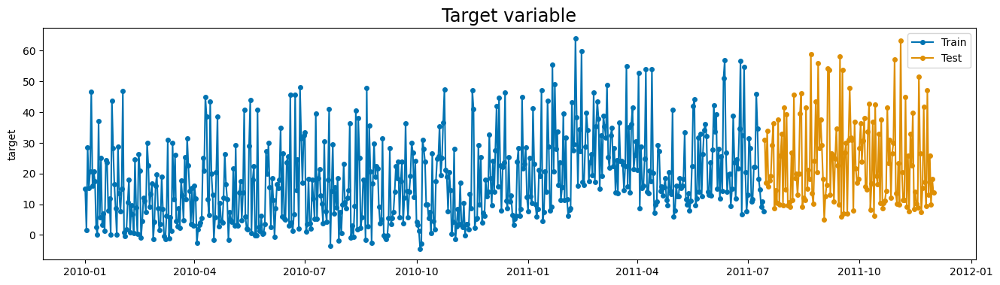
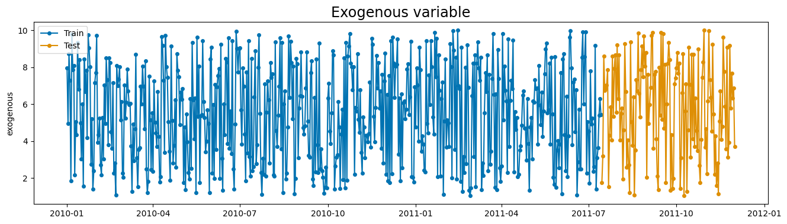
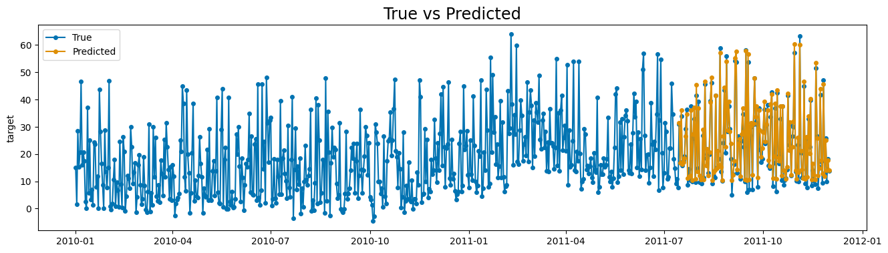
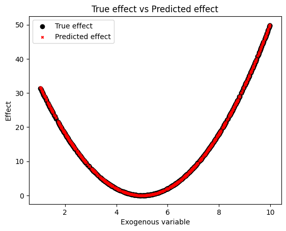

Customizing exogenous effects
This section explains how to create custom exogenous effects in Prophetverse. We will start by explaining what is an exogenous effect, and then we will show a practical example where we create an effect that uses a squared function to model the relationship between the exogenous variable and the target variable.
The effects API
The exogenous effect API allows you to create custom exogenous components for the Prophetverse model. This is useful when we want to model specific patterns or relationships between the exogenous variables and the target variable. For example, enforcing a positive effect of a variable on the mean, or modeling a non-linear relationship.
If you have read the theory section,
by effect we mean each function \(f_i\). You can implement those custom
functions by subclassing the BaseEffect class, and then use them in the
Prophetverse model. Some effects are already implemented in the library,
and you can find them in the prophetverse.effects module.
When creating a model instance, effects can be specified through exogenous_effects
parameter of the Prophetverse model. This parameter is a list of tuples of three
values: the name, the effect object, and a regex to filter
columns related to that effect. The regex is what defines \(x_i\) in the previous section.
The prophetverse.utils.regex module provides some useful functions to create
regex patterns for common use cases, include starts_with, ends_with, contains,
and no_input_columns.
Consider the example below, where we create a model with a linear seasonality effect
and a custom effect that uses the feature channel1_investment as input and transforms
it with a hill curve,
which is a common curve for capturing diminishing returns.
from prophetverse.effects import HillEffect, LinearFourierSeasonality
from prophetverse.sktime import Prophetverse
from prophetverse.utils.regex import exact, no_input_columns, starts_with
exogenous_effects = [
(
"seasonality", # The name of the effect
LinearFourierSeasonality( # The object
freq="D",
sp_list=[7, 365.25],
fourier_terms_list=[3, 10],
prior_scale=0.1,
effect_mode="multiplicative",
),
no_input_columns, # The regex
),
(
"channel1_investment_incremental", # The name of the effect
HillEffect(
effect_mode="additive"
),
exact("channel1_investment"), # Column in dataframe
),
]
model = Prophetverse(exogenous_effects=exogenous_effects)
Creating such models in Prophetverse is like creating buildings from lego blocks. You define how you model should work, and then you can leverage all the interface to carry out the forecasting and inference tasks.
Creating a custom effect
The effects can be any object that implements the BaseEffect interface, and you can
create your own effects by subclassing BaseEffect and implementing _fit,
_transform and _predict methods.
-
_fit(optional): This method is called during fit() of the forecasting and should be used to initialize any necessary parameters or data structures. It receives the exogenous variables dataframe X, the seriesy, and the scale factorscalethat was used to scale the timeseries. -
_transform(optional): This method receives the exogenous variables dataframe, and should return an object containing the data needed for the effect. This object will be passed to the predict method asdata. By default the columns of the dataframe that match the regex pattern are selected, and the result is converted to ajnp.ndarray. -
_predict(mandatory): This method receives the output of_transformand all previously computed effects. It should return the effect values as ajnp.ndarray
In many cases, the _fit and _transform steps are not needed to be implemented,
since the default behaviour may be the desired one. In the example below, we implement
a really simple SquaredEffect class, which leverages the default behaviour of the
BaseEffect class.
Squared Effect class
The SquaredEffect class receives two
hyperparameters: the prior distribution for the scale parameter, and the prior
distribution for the offset parameter. If no prior is provided, it uses a
Gamma(1, 1) for the scale and a Normal(0, 1) for the offset. Note that here
we already see an interesting feature of Prophetverse: by adopting a Gamma Prior,
we force the effect to be positive. Any other prior with positive support would
work as well. If no such constraint is needed, we can use a Normal(0, 1) prior or
any other distribution with support in the real line.
from typing import Dict, Optional
import jax.numpy as jnp
import numpyro
from numpyro import distributions as dist
from numpyro.distributions import Distribution
from prophetverse.effects.base import BaseEffect
class SquaredEffect(BaseEffect):
"""Represents a squared effect as effect = scale * (data - offset)^2.
Parameters
----------
scale_prior : Optional[Distribution], optional
The prior distribution for the scale parameter., by default Gamma
offset_prior : Optional[Distribution], optional
The prior distribution for the rate parameter., by default Normal(0, 1)
"""
def __init__(
self,
scale_prior: Optional[Distribution] = None,
offset_prior : Optional[Distribution] = None,
):
self.scale_prior = scale_prior or dist.Gamma(1, 1)
self.offset_prior = offset_prior or dist.Normal(0, 1)
super().__init__()
def _predict( # type: ignore[override]
self,
data: jnp.ndarray,
predicted_effects: Optional[Dict[str, jnp.ndarray]] = None,
) -> jnp.ndarray:
"""Apply and return the effect values.
Parameters
----------
data : Any
Data obtained from the transformed method.
predicted_effects : Dict[str, jnp.ndarray], optional
A dictionary containing the predicted effects, by default None.
Returns
-------
jnp.ndarray
An array with shape (T,1) for univariate timeseries, or (N, T, 1) for
multivariate timeseries, where T is the number of timepoints and N is the
number of series.
"""
scale = numpyro.sample("log_scale", self.scale_prior)
offset = numpyro.sample("offset", self.offset_prior)
effect = scale * (data - offset) ** 2
return effect
The _fit and _transform methods are not implemented, and the default behaviour is
preserved (the columns of the dataframe that match the regex pattern are selected,
and the result is converted to a jnp.ndarray with key "data").
Practical example
The example below is, of course, a toy example, but I hope it illustrates the
process of creating a custom effect.
We load a synthetic dataset with a squared relationship between the exogenous
variable and the target variable, and then we fit a model with the SquaredEffect.
The true relationship is 2 * (x - 5) ** 2, and we will see if the model is able to
recover it.
Loading the series
import matplotlib.pyplot as plt
from sktime.split import temporal_train_test_split
from sktime.utils.plotting import plot_series
from prophetverse.datasets import load_synthetic_squared_exogenous
y, X = load_synthetic_squared_exogenous()
y_train, y_test, X_train, X_test = temporal_train_test_split(
y,
X,
test_size=0.2,
)
display(y.head())
display(X.head())
fig, ax = plot_series(
y_train, y_test, labels=["Train", "Test"], title="Target variable"
)
fig.show()
fig, ax = plot_series(
X_train, X_test, labels=["Train", "Test"], title="Exogenous variable"
)
fig.show()
Output: [3]
| target | |
|---|---|
| time | |
| 2010-01-01 | 14.956419 |
| 2010-01-02 | 1.694310 |
| 2010-01-03 | 28.520329 |
| 2010-01-04 | 15.180486 |
| 2010-01-05 | 20.784949 |
| exogenous | |
|---|---|
| time | |
| 2010-01-01 | 7.965604 |
| 2010-01-02 | 4.949906 |
| 2010-01-03 | 8.727381 |
| 2010-01-04 | 7.276312 |
| 2010-01-05 | 1.847596 |


Creating the model
from prophetverse.effects.trend import PiecewiseLinearTrend
from prophetverse.engine import MAPInferenceEngine
from prophetverse.sktime import Prophetverse
from prophetverse.utils.regex import exact
model = (
Prophetverse()
>> PiecewiseLinearTrend(
changepoint_interval=100,
changepoint_prior_scale=.1,
changepoint_range=-100,
)
>> MAPInferenceEngine()
) >> (
"exog_effect",
SquaredEffect(
scale_prior=dist.Normal(0, 10),
offset_prior=dist.Normal(0, 10),
),
exact("exogenous"),
)
model
Output: [4]
Prophetverse(exogenous_effects=[('exog_effect',
SquaredEffect(offset_prior=<numpyro.distributions.continuous.Normal object at 0x13fcd0e90>,
scale_prior=<numpyro.distributions.continuous.Normal object at 0x1508ec3d0>),
'^exogenous$')],
inference_engine=MAPInferenceEngine(),
trend=PiecewiseLinearTrend(changepoint_interval=100,
changepoint_prior_scale=0.1,
changepoint_range=-100))Please rerun this cell to show the HTML repr or trust the notebook.Prophetverse(exogenous_effects=[('exog_effect',
SquaredEffect(offset_prior=<numpyro.distributions.continuous.Normal object at 0x13fcd0e90>,
scale_prior=<numpyro.distributions.continuous.Normal object at 0x1508ec3d0>),
'^exogenous$')],
inference_engine=MAPInferenceEngine(),
trend=PiecewiseLinearTrend(changepoint_interval=100,
changepoint_prior_scale=0.1,
changepoint_range=-100))PiecewiseLinearTrend(changepoint_interval=100, changepoint_prior_scale=0.1,
changepoint_range=-100)PiecewiseLinearTrend(changepoint_interval=100, changepoint_prior_scale=0.1,
changepoint_range=-100)To fit and plot, we use always the same interface, from sktime library.
Output: [5]
| target | |
|---|---|
| 2011-07-15 | 31.399237 |
| 2011-07-16 | 16.795490 |
| 2011-07-17 | 36.025959 |
| 2011-07-18 | 16.220688 |
| 2011-07-19 | 16.969715 |
Output: [6]

Recovering the predicted effect and components
This library adds extra methods to the sktime interface, such as predict_components,
which behaves similarly to predict, but returns the components of the forecast as
components of the output.
The name of the effect in the output dataframe is equal to the one we have passed as first item in the tuple when creating the model. In this case, the name is "exog_effect".
Output: [7]
| exog_effect | mean | obs | trend | |
|---|---|---|---|---|
| 2010-01-01 | 17.593569 | 17.406477 | 17.369835 | -0.187097 |
| 2010-01-02 | 0.006424 | -0.164400 | -0.165823 | -0.170824 |
| 2010-01-03 | 27.817766 | 27.663198 | 27.745121 | -0.154552 |
| 2010-01-04 | 10.351842 | 10.213557 | 10.228052 | -0.138279 |
| 2010-01-05 | 20.048355 | 19.926350 | 20.025919 | -0.122007 |
Now, let's compare it with the true effect. We will plot the true effect and the predicted effect in the same plot.
fig, ax = plt.subplots()
ax.scatter(X["exogenous"], 2 * (X["exogenous"] - 5) ** 2,
color="black", label="True effect")
ax.scatter(X["exogenous"], components["exog_effect"],
marker="x", color="red",
s=10, label="Predicted effect")
ax.set(xlabel="Exogenous variable",
ylabel="Effect",
title="True effect vs Predicted effect")
ax.legend()
fig.show()
Output: [8]
